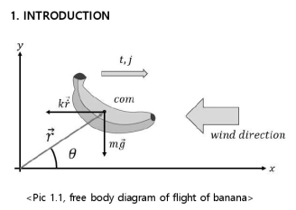

Sorry. This is a real battle between the strongest in the world.. Was that a real loser?
A really believable legend..And even though there may be dogs about the many things that happen in front of Kashi on the server board, such as flying rocks and meteors flying in front of Kashi, there is no one but me to light the residential village that makes you go crazy, and the scene that was removed like the wind is really something that anyone who saw it from the beginning cannot help but cry, and it is really so touching and I do not wish for the latest version of Boto. I am watching episode 20 now and I am so touched that the generation has come out and everything is shining properly and I have to say that it is a memory that I cannot know. Such feelings are strangely intertwined.
Shino seems to be talking a lot. He's a good teacher.. and why are you badmouthing Boruto? He's cute. He looks like Naruto. His personality is similar. And is it true that in Boruto there's a god-like being that would win if Naruto and Sasuke fought?? And I looked it up on the internet, is this really true?? Is that god-level monster from Boruto? - Look at Naruto and Sasuke combined. I was so shocked when I saw this that I just let out "Wow" ;; Seriously, that's fucking crazy.. If that's real, you really have to see it. It's not like it's going to destroy the world..
Wow, I really wanted to cry when I saw Naruto and Sasuke become like that.. I'm watching it because it's Borutog, but is this real..? Sigh.. I really want to see Sasuke.. I really wonder when they became god-level powerhouses. It reminds me of the old days, when I was in middle school, and I'm sad, happy, touched, and have complicated emotions.. Anyway, Naruto is truly the greatest masterpiece in anime..